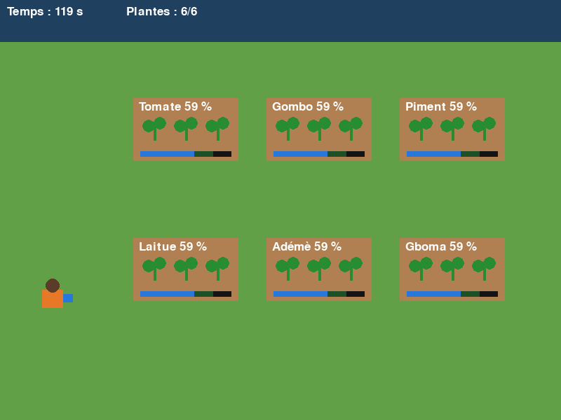
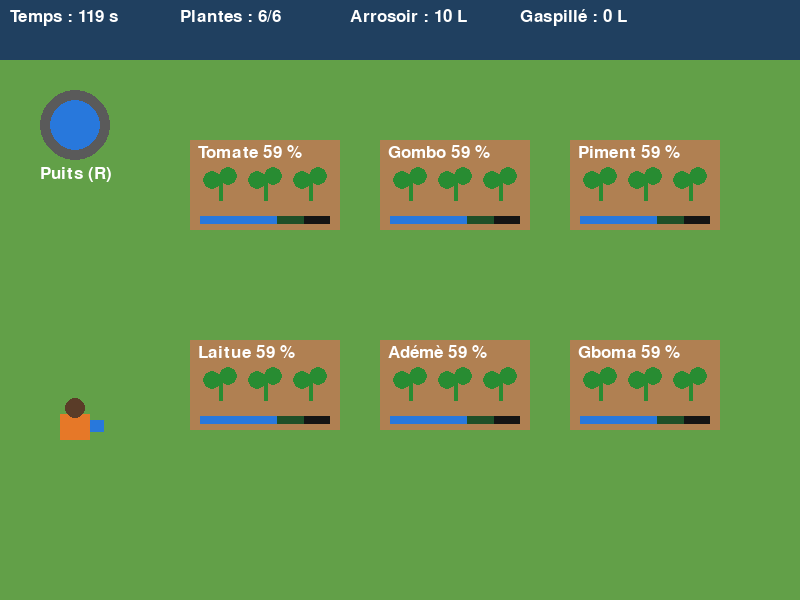
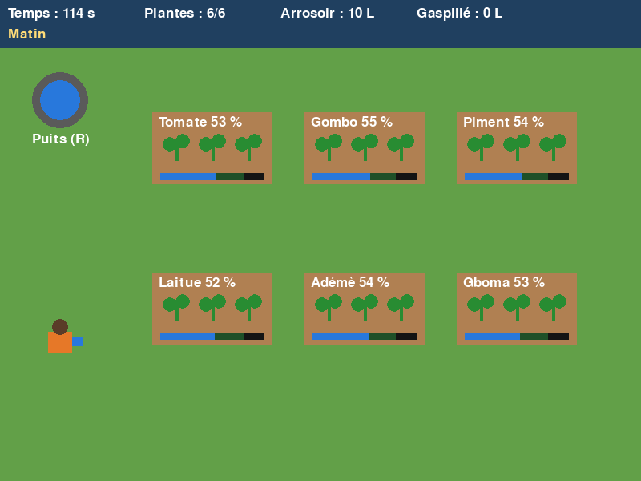
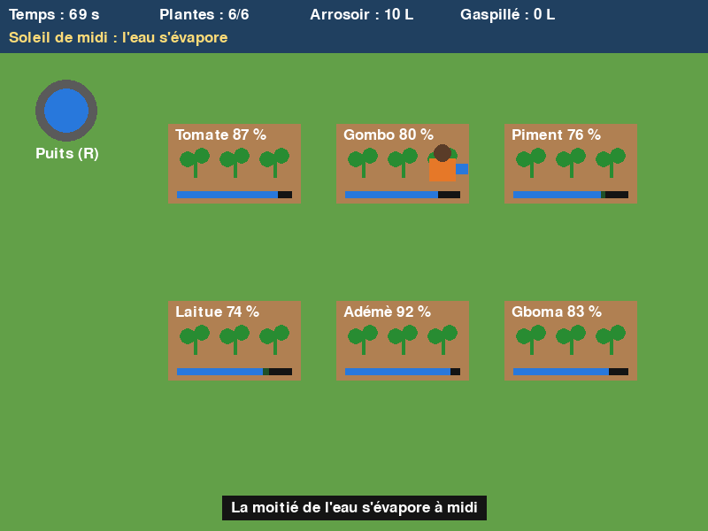
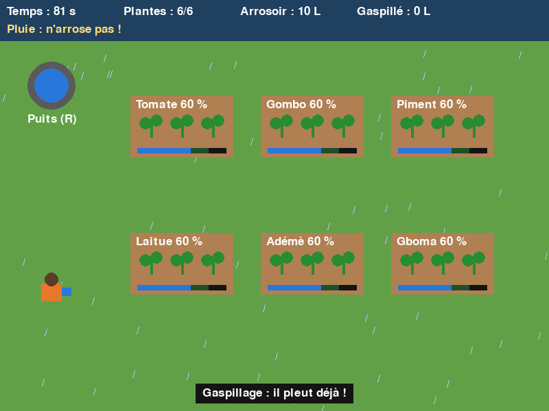
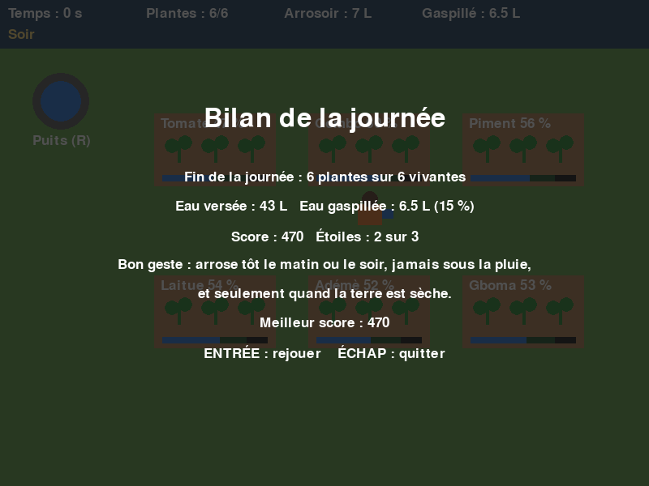

1Le projet en bref
Le club jardin des élèves de 6e gaspille beaucoup d’eau. Dans ce jeu, on déplace un jardinier qui arrose six planches (tomate, gombo, piment, laitue, adémè, gboma) avec un arrosoir de 10 L qu’il faut remplir au puits. Le soleil de midi assèche la terre, la pluie l’arrose gratuitement : le but est que les plantes poussent sans gaspiller.
Les tests automatiques comparent deux façons de jouer : le joueur économe gaspille 21 % de l’eau, le gaspilleur 56 %.
Un exemple, pas un modèle à copier. Ce projet témoin a été rédigé par l’enseignant(e) pour montrer une trace de niveau 7-8. Il porte sur un autre sujet que le tien. Les personnes, les enquêtes et les tests avec des utilisateurs sont inventés pour l’exemple ; c’est signalé dans le document.
Lire la trace complète en ligne, de A1 à D4. C’est la même trace que le document Word, présentée comme un article.
2Captures d’écran












3Jouer
- Installe PyGame :
pip install pygame - Lance le jeu :
python goutte_a_goutte.py - Flèches pour se déplacer, Espace pour arroser, R pour remplir au puits, Entrée pour rejouer, Échap pour quitter.
- Pour changer de niveau, modifie la ligne
NIVEAU = 3en haut du fichier (1, 2 ou 3).
Lire le code : goutte_a_goutte.py (526 lignes)
# Goutte à goutte : jeu témoin PyGame (Design PEI 5, unités 1 et 2)
#
# Le joueur arrose les planches du jardin scolaire pendant une journée,
# sans laisser mourir les plantes et sans gaspiller l'eau.
#
# Commandes : flèches = se déplacer, ESPACE = arroser la planche touchée,
# R = remplir l'arrosoir au puits, ENTRÉE = rejouer, ÉCHAP = quitter.
#
# NIVEAU 1 : déplacement, arrosage, jauges d'humidité, minuterie.
# NIVEAU 2 : + arrosoir de 10 L, puits, litres gaspillés, écran de bilan.
# NIVEAU 3 : + météo (soleil de midi, pluie), meilleur score enregistré.
#
# Le code est volontairement simple : pas de raccourcis comme +=,
# chaque calcul est écrit en entier.
import os
import random
import pygame
NIVEAU = 3
# Réglages du jeu
LARGEUR = 800
HAUTEUR = 600
IMAGES_PAR_SECONDE = 30
DUREE_JOURNEE = 120 # secondes de jeu pour une journée
CAPACITE_ARROSOIR = 10 # litres
DOSE = 1 # litres versés à chaque appui sur ESPACE
GAIN_PAR_LITRE = 20 # points d'humidité apportés par un litre
MARGE_ARROSAGE = 15 # pixels autour de la planche où l'on peut arroser
VITESSE_JARDINIER = 220 # pixels par seconde
DELAI_FANAISON = 5 # secondes à 0 % avant que la plante meure
LARGEUR_PLANCHE = 150
HAUTEUR_PLANCHE = 90
LARGEUR_JARDINIER = 30
HAUTEUR_JARDINIER = 40
PUITS_X = 75 # centre du puits
PUITS_Y = 125
FICHIER_SCORE = "meilleur_score.txt"
# Couleurs (rouge, vert, bleu)
TERRE = (176, 128, 82)
HERBE = (98, 160, 72)
BLEU_NUIT = (32, 64, 96)
BLANC = (255, 255, 255)
NOIR = (20, 20, 20)
BLEU_EAU = (40, 120, 220)
VERT_PLANTE = (40, 140, 50)
VERT_FONCE = (30, 80, 40)
JAUNE_SEC = (200, 170, 40)
GRIS_MORT = (120, 110, 100)
JAUNE_TEXTE = (255, 220, 120)
ORANGE = (230, 120, 40)
MARRON = (90, 60, 40)
GRIS_PUITS = (90, 90, 90)
BLEU_PLUIE = (180, 200, 255)
# Noms des planches et vitesse de séchage (points d'humidité perdus par seconde)
NOMS = ["Tomate", "Gombo", "Piment", "Laitue", "Adémè", "Gboma"]
SECHAGES = [1.2, 0.9, 1.0, 1.5, 1.1, 1.3]
# Variables du jeu (elles changent pendant la partie)
planches = []
jardinier_x = 0
jardinier_y = 0
temps = 0
arrosoir = 0
litres_verses = 0
litres_gaspilles = 0
message = ""
duree_message = 0
fini = False
pluie_debut = 0
pluie_fin = 0
meilleur_score = 0
police = None
grande_police = None
# ---------- Planches ----------
def creer_planche(nom, sechage, x, y):
planche = {}
planche["nom"] = nom
planche["sechage"] = sechage
planche["x"] = x
planche["y"] = y
planche["humidite"] = 60
planche["temps_a_sec"] = 0
planche["morte"] = False
return planche
def secher_planche(planche, dt, facteur):
if planche["morte"] == True:
return
if il_pleut() == True:
planche["humidite"] = planche["humidite"] + 4 * dt
if planche["humidite"] > 100:
planche["humidite"] = 100
else:
planche["humidite"] = planche["humidite"] - planche["sechage"] * facteur * dt
if planche["humidite"] < 0:
planche["humidite"] = 0
if planche["humidite"] == 0:
planche["temps_a_sec"] = planche["temps_a_sec"] + dt
if planche["temps_a_sec"] >= DELAI_FANAISON:
planche["morte"] = True
else:
planche["temps_a_sec"] = 0
def donner_eau(planche, litres):
# Ajoute l'eau à la planche et renvoie les litres qui débordent (gaspillés).
place = 100 - planche["humidite"]
apport = litres * GAIN_PAR_LITRE
if apport <= place:
planche["humidite"] = planche["humidite"] + apport
return 0
planche["humidite"] = 100
trop = (apport - place) / GAIN_PAR_LITRE
return trop
# ---------- Début d'une partie ----------
def reinitialiser():
global planches, jardinier_x, jardinier_y, temps, arrosoir
global litres_verses, litres_gaspilles, message, duree_message, fini
global pluie_debut, pluie_fin
planches = []
for i in range(6):
colonne = i % 3
ligne = i // 3
x = 190 + colonne * 190
y = 140 + ligne * 200
planche = creer_planche(NOMS[i], SECHAGES[i], x, y)
planches.append(planche)
jardinier_x = 60
jardinier_y = 400
temps = 0
arrosoir = CAPACITE_ARROSOIR
litres_verses = 0
litres_gaspilles = 0
message = ""
duree_message = 0
fini = False
pluie_debut = random.uniform(20, DUREE_JOURNEE - 30)
pluie_fin = pluie_debut + 10
# ---------- Météo (niveau 3) ----------
def il_pleut():
if NIVEAU < 3:
return False
if temps >= pluie_debut and temps < pluie_fin:
return True
return False
def soleil_de_midi():
if NIVEAU < 3:
return False
if il_pleut() == True:
return False
if temps >= 40 and temps < 80:
return True
return False
def texte_meteo():
if il_pleut() == True:
return "Pluie : n'arrose pas !"
if soleil_de_midi() == True:
return "Soleil de midi : l'eau s'évapore"
if temps < 40:
return "Matin"
return "Soir"
# ---------- Actions du joueur ----------
def afficher_message(texte):
global message, duree_message
message = texte
duree_message = 2
def touche_le_rectangle(x, y, largeur, hauteur, marge):
# Vrai si le jardinier chevauche le rectangle agrandi de la marge.
if jardinier_x + LARGEUR_JARDINIER < x - marge:
return False
if jardinier_x > x + largeur + marge:
return False
if jardinier_y + HAUTEUR_JARDINIER < y - marge:
return False
if jardinier_y > y + hauteur + marge:
return False
return True
def planche_touchee():
for planche in planches:
if touche_le_rectangle(planche["x"], planche["y"], LARGEUR_PLANCHE, HAUTEUR_PLANCHE, MARGE_ARROSAGE):
return planche
return None
def pres_du_puits():
return touche_le_rectangle(PUITS_X - 35, PUITS_Y - 35, 70, 70, 20)
def arroser():
global arrosoir, litres_verses, litres_gaspilles
planche = planche_touchee()
if planche == None:
return
if planche["morte"] == True:
return
if NIVEAU >= 2:
if arrosoir < DOSE:
afficher_message("Arrosoir vide : va au puits (touche R)")
return
arrosoir = arrosoir - DOSE
litres_verses = litres_verses + DOSE
perdu = 0
if il_pleut() == True:
perdu = DOSE
afficher_message("Gaspillage : il pleut déjà !")
if soleil_de_midi() == True:
perdu = DOSE / 2
afficher_message("La moitié de l'eau s'évapore à midi")
trop = donner_eau(planche, DOSE - perdu)
if trop > 0:
afficher_message("Gaspillage : " + planche["nom"] + " avait assez d'eau")
if NIVEAU >= 2:
litres_gaspilles = litres_gaspilles + perdu + trop
def remplir():
global arrosoir
if NIVEAU < 2:
return
if pres_du_puits() == True:
arrosoir = CAPACITE_ARROSOIR
afficher_message("Arrosoir rempli : 10 L")
# ---------- Mise à jour à chaque image ----------
def deplacer_jardinier(dt, gauche, droite, haut, bas):
global jardinier_x, jardinier_y
pas = VITESSE_JARDINIER * dt
if gauche == True:
jardinier_x = jardinier_x - pas
if droite == True:
jardinier_x = jardinier_x + pas
if haut == True:
jardinier_y = jardinier_y - pas
if bas == True:
jardinier_y = jardinier_y + pas
# Le jardinier ne doit pas sortir de l'écran
if jardinier_x < 0:
jardinier_x = 0
if jardinier_x > LARGEUR - LARGEUR_JARDINIER:
jardinier_x = LARGEUR - LARGEUR_JARDINIER
if jardinier_y < 60:
jardinier_y = 60
if jardinier_y > HAUTEUR - HAUTEUR_JARDINIER:
jardinier_y = HAUTEUR - HAUTEUR_JARDINIER
def mettre_a_jour(dt, gauche, droite, haut, bas):
global temps, duree_message
if fini == True:
return
temps = temps + dt
deplacer_jardinier(dt, gauche, droite, haut, bas)
facteur = 1
if soleil_de_midi() == True:
facteur = 2
for planche in planches:
secher_planche(planche, dt, facteur)
duree_message = duree_message - dt
if duree_message < 0:
duree_message = 0
if temps >= DUREE_JOURNEE:
terminer()
if plantes_vivantes() == 0:
terminer()
# ---------- Score et fin de partie ----------
def plantes_vivantes():
nombre = 0
for planche in planches:
if planche["morte"] == False:
nombre = nombre + 1
return nombre
def calculer_score():
score = plantes_vivantes() * 100 - round(litres_gaspilles * 20)
return score
def pourcentage_gaspille():
if litres_verses == 0:
return 0
pourcentage = round(100 * litres_gaspilles / litres_verses)
return pourcentage
def nombre_etoiles():
vivantes = plantes_vivantes()
gaspi = pourcentage_gaspille()
if vivantes == 6 and gaspi <= 10:
return 3
if vivantes >= 5 and gaspi <= 25:
return 2
if vivantes >= 3:
return 1
return 0
def terminer():
global fini, meilleur_score
if fini == True:
return
fini = True
if NIVEAU >= 3:
if calculer_score() > meilleur_score:
meilleur_score = calculer_score()
ecrire_meilleur_score()
# ---------- Meilleur score (niveau 3) ----------
def lire_meilleur_score():
if os.path.exists(FICHIER_SCORE) == False:
return 0
fichier = open(FICHIER_SCORE, "r")
texte = fichier.read()
fichier.close()
if texte.strip().isdigit() == False:
return 0
return int(texte)
def ecrire_meilleur_score():
fichier = open(FICHIER_SCORE, "w")
fichier.write(str(meilleur_score))
fichier.close()
# ---------- Dessin ----------
def ecrire_texte(ecran, texte, x, y, couleur):
image = police.render(texte, True, couleur)
ecran.blit(image, (x, y))
def ecrire_texte_centre(ecran, texte, y, couleur, grande):
if grande == True:
image = grande_police.render(texte, True, couleur)
else:
image = police.render(texte, True, couleur)
x = LARGEUR // 2 - image.get_width() // 2
ecran.blit(image, (x, y))
def dessiner_planche(ecran, planche):
x = planche["x"]
y = planche["y"]
pygame.draw.rect(ecran, TERRE, (x, y, LARGEUR_PLANCHE, HAUTEUR_PLANCHE))
couleur = VERT_PLANTE
if planche["humidite"] < 25:
couleur = JAUNE_SEC
if planche["morte"] == True:
couleur = GRIS_MORT
# Trois plantes dessinées avec une tige et deux feuilles
for i in range(3):
cx = x + 30 + i * 45
cy = y + 40
pygame.draw.line(ecran, couleur, (cx, cy + 20), (cx, cy), 4)
pygame.draw.circle(ecran, couleur, (cx - 8, cy), 9)
pygame.draw.circle(ecran, couleur, (cx + 8, cy - 4), 9)
# Jauge d'humidité : la zone idéale (40 à 80 %) est en vert foncé
jauge_x = x + 10
jauge_y = y + HAUTEUR_PLANCHE - 14
pygame.draw.rect(ecran, NOIR, (jauge_x, jauge_y, 130, 8))
pygame.draw.rect(ecran, VERT_FONCE, (jauge_x + 52, jauge_y, 52, 8))
longueur = int(130 * planche["humidite"] / 100)
pygame.draw.rect(ecran, BLEU_EAU, (jauge_x, jauge_y, longueur, 8))
texte = planche["nom"] + " " + str(int(planche["humidite"])) + " %"
ecrire_texte(ecran, texte, x + 8, y + 4, BLANC)
def dessiner_jardinier(ecran):
x = int(jardinier_x)
y = int(jardinier_y)
pygame.draw.rect(ecran, ORANGE, (x, y + 14, LARGEUR_JARDINIER, HAUTEUR_JARDINIER - 14))
pygame.draw.circle(ecran, MARRON, (x + 15, y + 8), 10)
pygame.draw.rect(ecran, BLEU_EAU, (x + LARGEUR_JARDINIER, y + 20, 14, 12))
def dessiner_pluie(ecran):
for i in range(60):
x = random.randint(0, LARGEUR)
y = random.randint(60, HAUTEUR)
pygame.draw.line(ecran, BLEU_PLUIE, (x, y), (x - 3, y + 10), 1)
def dessiner_barre(ecran):
pygame.draw.rect(ecran, BLEU_NUIT, (0, 0, LARGEUR, 60))
restant = int(DUREE_JOURNEE - temps)
if restant < 0:
restant = 0
ecrire_texte(ecran, "Temps : " + str(restant) + " s", 10, 8, BLANC)
ecrire_texte(ecran, "Plantes : " + str(plantes_vivantes()) + "/6", 180, 8, BLANC)
if NIVEAU >= 2:
ecrire_texte(ecran, "Arrosoir : " + str(arrosoir) + " L", 350, 8, BLANC)
ecrire_texte(ecran, "Gaspillé : " + str(round(litres_gaspilles, 1)) + " L", 520, 8, BLANC)
if NIVEAU >= 3:
ecrire_texte(ecran, texte_meteo(), 10, 34, JAUNE_TEXTE)
def dessiner_message(ecran):
image = police.render(message, True, BLANC)
x = LARGEUR // 2 - image.get_width() // 2
y = HAUTEUR - 35
pygame.draw.rect(ecran, NOIR, (x - 10, y - 5, image.get_width() + 20, image.get_height() + 10))
ecran.blit(image, (x, y))
def dessiner_bilan(ecran):
voile = pygame.Surface((LARGEUR, HAUTEUR))
voile.set_alpha(190)
voile.fill(NOIR)
ecran.blit(voile, (0, 0))
ecrire_texte_centre(ecran, "Bilan de la journée", 130, BLANC, True)
y = 210
ecrire_texte_centre(ecran, "Fin de la journée : " + str(plantes_vivantes()) + " plantes sur 6 vivantes", y, BLANC, False)
if NIVEAU >= 2:
y = y + 36
texte = "Eau versée : " + str(litres_verses) + " L Eau gaspillée : " + str(round(litres_gaspilles, 1))
texte = texte + " L (" + str(pourcentage_gaspille()) + " %)"
ecrire_texte_centre(ecran, texte, y, BLANC, False)
y = y + 36
texte = "Score : " + str(calculer_score()) + " Étoiles : " + str(nombre_etoiles()) + " sur 3"
ecrire_texte_centre(ecran, texte, y, BLANC, False)
y = y + 36
ecrire_texte_centre(ecran, "Bon geste : arrose tôt le matin ou le soir, jamais sous la pluie,", y, BLANC, False)
y = y + 36
ecrire_texte_centre(ecran, "et seulement quand la terre est sèche.", y, BLANC, False)
if NIVEAU >= 3:
y = y + 36
ecrire_texte_centre(ecran, "Meilleur score : " + str(meilleur_score), y, BLANC, False)
y = y + 36
ecrire_texte_centre(ecran, "ENTRÉE : rejouer ÉCHAP : quitter", y, BLANC, False)
def dessiner(ecran):
ecran.fill(HERBE)
if il_pleut() == True:
dessiner_pluie(ecran)
for planche in planches:
dessiner_planche(ecran, planche)
if NIVEAU >= 2:
pygame.draw.circle(ecran, GRIS_PUITS, (PUITS_X, PUITS_Y), 35)
pygame.draw.circle(ecran, BLEU_EAU, (PUITS_X, PUITS_Y), 25)
ecrire_texte(ecran, "Puits (R)", PUITS_X - 35, PUITS_Y + 40, BLANC)
dessiner_jardinier(ecran)
dessiner_barre(ecran)
if duree_message > 0:
dessiner_message(ecran)
if fini == True:
dessiner_bilan(ecran)
# ---------- Programme principal ----------
def preparer_polices():
global police, grande_police
police = pygame.font.SysFont(None, 26)
grande_police = pygame.font.SysFont(None, 48)
def main():
global meilleur_score
pygame.init()
ecran = pygame.display.set_mode((LARGEUR, HAUTEUR))
pygame.display.set_caption("Goutte à goutte : arrose sans gaspiller")
horloge = pygame.time.Clock()
preparer_polices()
meilleur_score = lire_meilleur_score()
reinitialiser()
en_cours = True
while en_cours == True:
dt = horloge.tick(IMAGES_PAR_SECONDE) / 1000
for evenement in pygame.event.get():
if evenement.type == pygame.QUIT:
en_cours = False
if evenement.type == pygame.KEYDOWN:
if evenement.key == pygame.K_ESCAPE:
en_cours = False
if evenement.key == pygame.K_SPACE and fini == False:
arroser()
if evenement.key == pygame.K_r and fini == False:
remplir()
if evenement.key == pygame.K_RETURN and fini == True:
reinitialiser()
touches = pygame.key.get_pressed()
gauche = touches[pygame.K_LEFT]
droite = touches[pygame.K_RIGHT]
haut = touches[pygame.K_UP]
bas = touches[pygame.K_DOWN]
mettre_a_jour(dt, gauche, droite, haut, bas)
dessiner(ecran)
pygame.display.flip()
pygame.quit()
main()
Lire le code : tests_automatiques.py (165 lignes)
# Tests automatiques du jeu témoin « Goutte à goutte » (preuves pour C2, C3, D1 et D2).
#
# Lancer : python tests_automatiques.py
# Le script joue des parties sans fenêtre avec trois joueurs simulés,
# mesure la vitesse d'affichage et enregistre des captures d'écran dans captures/.
# Outil de l'enseignant(e) : les élèves n'ont pas besoin de le comprendre.
import os
import random
import time
os.environ["SDL_VIDEODRIVER"] = "dummy"
import pygame
DOSSIER = os.path.dirname(os.path.abspath(__file__))
DOSSIER_CAPTURES = os.path.join(DOSSIER, "captures")
DT = 1 / 30
# Charger le jeu sans lancer sa dernière ligne main()
chemin_jeu = os.path.join(DOSSIER, "goutte_a_goutte.py")
fichier = open(chemin_jeu, "r", encoding="utf-8")
code = fichier.read()
fichier.close()
code = code.replace("\nmain()\n", "\n")
jeu = {}
exec(code, jeu)
def aller_vers(x, y):
# Renvoie gauche, droite, haut, bas pour rejoindre le point (x, y)
centre_x = jeu["jardinier_x"] + 15
centre_y = jeu["jardinier_y"] + 20
gauche = centre_x > x + 5
droite = centre_x < x - 5
haut = centre_y > y + 5
bas = centre_y < y - 5
return gauche, droite, haut, bas
def centre_planche(planche):
return planche["x"] + 75, planche["y"] + 45
def joueur_econome(memoire):
# Arrose la planche la plus sèche sous 45 %, jamais sous la pluie, remplit au puits.
if jeu["arrosoir"] == 0 or memoire["au_puits"] == True:
memoire["au_puits"] = True
if jeu["pres_du_puits"]() == True:
jeu["remplir"]()
memoire["au_puits"] = False
return False, False, False, False
return aller_vers(jeu["PUITS_X"], jeu["PUITS_Y"])
cible = None
for planche in jeu["planches"]:
if planche["morte"] == False:
if cible == None or planche["humidite"] < cible["humidite"]:
cible = planche
if cible == None or cible["humidite"] > 45 or jeu["il_pleut"]() == True:
return False, False, False, False
if jeu["planche_touchee"]() is cible:
memoire["pause"] = memoire["pause"] + 1
if memoire["pause"] % 6 == 0 and cible["humidite"] <= 80:
jeu["arroser"]()
return False, False, False, False
x, y = centre_planche(cible)
return aller_vers(x, y)
def joueur_gaspilleur(memoire):
# Arrose dès qu'il touche une planche, sans regarder la jauge ni la météo.
if jeu["arrosoir"] == 0:
if jeu["pres_du_puits"]() == True:
jeu["remplir"]()
return False, False, False, False
return aller_vers(jeu["PUITS_X"], jeu["PUITS_Y"])
cible = jeu["planches"][memoire["i"] % 6]
if jeu["planche_touchee"]() is cible:
jeu["arroser"]()
memoire["i"] = memoire["i"] + 1
return False, False, False, False
x, y = centre_planche(cible)
return aller_vers(x, y)
def joueur_inactif(memoire):
return False, False, False, False
def capture(nom):
ecran = pygame.Surface((800, 600))
jeu["dessiner"](ecran)
pygame.image.save(ecran, os.path.join(DOSSIER_CAPTURES, nom))
def jouer(joueur, graine, captures):
random.seed(graine)
jeu["NIVEAU"] = 3
jeu["reinitialiser"]()
jeu["meilleur_score"] = 1000000 # ne pas écraser le vrai meilleur score
memoire = {"au_puits": False, "pause": 0, "i": 0}
images = 0
while jeu["fini"] == False:
gauche, droite, haut, bas = joueur(memoire)
jeu["mettre_a_jour"](DT, gauche, droite, haut, bas)
images = images + 1
for instant in list(captures.keys()):
if jeu["temps"] >= instant:
nom, message = captures[instant]
if message != "":
jeu["afficher_message"](message)
capture(nom)
del captures[instant]
return images * DT
def mesurer_images_par_seconde():
ecran = pygame.display.set_mode((800, 600))
jeu["reinitialiser"]()
debut = time.perf_counter()
for i in range(300):
jeu["mettre_a_jour"](DT, False, False, False, False)
jeu["dessiner"](ecran)
pygame.display.flip()
return 300 / (time.perf_counter() - debut)
def main():
pygame.init()
jeu["preparer_polices"]()
os.makedirs(DOSSIER_CAPTURES, exist_ok=True)
print("Joueur | Partie | Durée (s) | Vivantes | Versé (L) | Gaspillé (L) | Gaspillé % | Étoiles")
joueurs = [("économe", joueur_econome), ("gaspilleur", joueur_gaspilleur), ("inactif", joueur_inactif)]
for nom, joueur in joueurs:
total = 0
for graine in range(1, 6):
duree = jouer(joueur, graine, {})
total = total + jeu["pourcentage_gaspille"]()
print("%-13s | %6d | %9.1f | %8d | %9.0f | %12.1f | %10d | %d" % (
nom, graine, duree, jeu["plantes_vivantes"](), jeu["litres_verses"],
jeu["litres_gaspilles"], jeu["pourcentage_gaspille"](), jeu["nombre_etoiles"]()))
print("%-13s | moyenne du gaspillage : %.0f %%" % (nom, total / 5))
print("Vitesse d'affichage : %.0f images par seconde (objectif : 30)" % mesurer_images_par_seconde())
print("Taille du programme : %.1f Ko, aucun fichier image ou son" % (os.path.getsize(chemin_jeu) / 1024))
# Captures d'écran pour la trace
jouer(joueur_econome, 3, {5: ("capture_matin.png", ""),
50: ("capture_midi.png", "La moitié de l'eau s'évapore à midi")})
random.seed(3)
jeu["reinitialiser"]()
jeu["temps"] = jeu["pluie_debut"] + 2
jeu["afficher_message"]("Gaspillage : il pleut déjà !")
capture("capture_pluie.png")
jouer(joueur_econome, 3, {})
jeu["meilleur_score"] = jeu["calculer_score"]()
capture("capture_bilan.png")
for niveau in [1, 2]:
jeu["NIVEAU"] = niveau
jeu["reinitialiser"]()
jeu["mettre_a_jour"](DT, False, False, False, False)
capture("capture_niveau" + str(niveau) + ".png")
print("Captures enregistrées dans", DOSSIER_CAPTURES)
pygame.quit()
main()
4Télécharger
- La trace complète, de A1 à D4 DOCX, 426 Ko (Word)
- Le jeu, les tests et les captures ZIP, 144 Ko